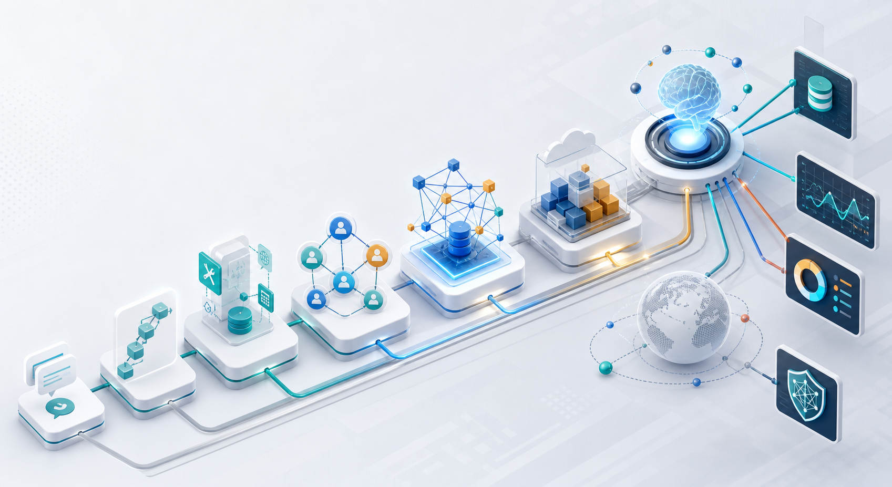

第一次接触 Agent 框架时，最容易困惑的是名字太多：LangChain、LlamaIndex、AutoGen、CrewAI、LangGraph、OpenAI Agents SDK、Google ADK、eve、MCP。更好的读法不是背名单，而是问一个朴素问题：这些框架分别在帮开发者解决什么麻烦？
Agent 框架的本质，是把“让模型做事”这件事，从一次性的 prompt，变成可维护、可调试、可上线的软件工程。

过去几年，开发者对 AI Agent 的理解经历了几次变化：先让模型能调用工具和查询数据，再让多个 Agent 分工协作，最后把 Agent 当成需要状态、权限、恢复和部署的软件系统。
第一次接触 Agent 框架时，最容易困惑的是名字太多：LangChain、LlamaIndex、AutoGen、CrewAI、LangGraph、OpenAI Agents SDK、Google ADK、eve、MCP。更好的读法不是背名单，而是问一个朴素问题：这些框架分别在帮开发者解决什么麻烦？
普通用户看到的是“AI 变聪明了”，开发者面对的却是另一组问题：怎么接数据库，怎么调用 API，怎么让任务不中断，怎么审计模型做过什么，怎么把它安全地接入真实业务系统。
下面的时间线不是严格年份排序，而是从简单到复杂的能力递进。重点不是谁更流行，而是谁回答了哪个工程问题。
模型只会聊天还不够。MRKL、ReAct 这类思想让模型学会选择工具、观察结果，再继续推理。
当应用需要查文档、连数据库、调 API 时，LangChain、LlamaIndex、Haystack 解决的是“把模型接到外部世界”的问题。
开发者开始尝试给模型一个目标，让它自己拆任务、执行、再生成下一步。AutoGPT、BabyAGI 代表了这波自治想象力。
一个 Agent 包办所有事情很难控制，于是 AutoGen、CrewAI、CAMEL、MetaGPT 把任务拆成角色、团队、会话和流程。
任务一旦变长，就要处理失败恢复、人工审批、状态保存。LangGraph、Microsoft Agent Framework 把 Agent 放进状态图和可恢复流程。
真正上线后，Agent 需要部署、权限、日志、沙箱、调度和观测。eve、Cloudflare Agents、Mastra、Pydantic AI、OpenAI Agents SDK、Google ADK 都在靠近应用运行时。
工具和 Agent 越来越多后，生态需要统一接口。MCP、A2A、AG-UI 等协议把工具、上下文、跨 Agent 通信和 UI 事件流从框架内部抽出来。
早期 demo 往往像一段 prompt 加几次工具调用；生产系统则完全不同。它通常同时包含模型接口、工具协议、上下文、状态、运行时、部署、观测和安全治理。
因此，很多框架并不是简单替代关系。LangChain、CrewAI、LangGraph、eve、Cloudflare Agents 可能处在同一个系统的不同层。
Agent 生态里的项目很多。下面按“主要解决什么问题”分组：上下文、协作、状态、部署、记忆、协议或平台化。
阅读这一节时，可以把每个框架当成一种答案：它试图把哪一类重复工程问题标准化？
LangChain 生态中的低层编排框架，重点是 long-running、stateful agents、checkpoint、streaming、human-in-the-loop。
它回答的是：当 agent 不再是一次请求，而是长任务时，状态如何保存、恢复和调试。
从数据连接、索引、检索和 RAG 起家，逐步扩展到 agents、tools、memory、multi-agent patterns。
它适合以企业知识、文档、结构化数据为核心的 agent 应用。
强调组件化 pipeline、Document Store、搜索、RAG、agent 与生产化部署。
它代表了“先有可靠检索与 pipeline，再把 agent 放进去”的稳健路线。
官方定位为结合 AutoGen 和 Semantic Kernel 的下一代框架，包含 agents、graph workflows、session state、middleware、telemetry、MCP。
它说明多 agent 正在从实验会话走向企业级可控编排。
用少量原语表达 agents、tools、handoffs、guardrails、sessions、tracing、MCP 和 sandbox agents。
它代表“模型厂商把常见 agent loop 标准化”的方向。
覆盖 Python、TypeScript、Go、Java、Kotlin，强调生产 agents、图工作流、多 agent、运行时、部署、观测、安全。
它体现了云厂商把 agent 开发纳入平台工程的趋势。
把 Pydantic 的类型、验证、依赖注入、结构化输出、Logfire observability、MCP 和 durable execution 集成带进 agent 开发。
它适合 Python 后端团队追求可测试、可验证、类型明确的 agent 代码。
把 agents、tools、workflows、memory、observability、evals、deployment、channels 集成到一个 TypeScript 开发体验中。
它和 eve 一样，都在向“agent 应用框架”靠拢。
基于 Cloudflare 的 durable identity、local SQL storage、real-time connections、scheduled work、recoverable execution。
它说明 agent 框架正在直接绑定云原生运行时能力。
把 agent 的长期记忆、memory blocks、archival memory、stateful conversations 放在中心。
这类框架强调：Agent 的核心不只是会行动，还要跨会话保留、检索和更新自我上下文。
MetaGPT 用软件公司 SOP 和角色协作组织任务；CAMEL 强调多 agent 社会、workforce、仿真和研究范式。
它们的价值在于探索“任务如何被组织成群体智能”。
MCP 把工具、数据源和工作流以标准接口暴露给 AI 应用；A2A 尝试解决 agent 之间跨系统通信。
协议化意味着未来的 agent 能力不再被单一框架锁死。
同样叫 Agent framework，真实定位差别很大。下面这张表按“主要切入点”整理，方便快速判断每类框架适合什么场景。
| 代表 | 核心定位 | 引入的新抽象 | 适合场景 | 注意点 |
|---|---|---|---|---|
| LangChain | 模型、工具、middleware、agent harness 的组合层。 | create_agent、tools、messages、model interface、middleware。 |
需要快速连接模型、工具、RAG 和业务代码。 | 复杂长任务通常要引入 LangGraph 或自建状态管理。 |
| LlamaIndex | 数据、索引、检索和上下文工程。 | Index、Retriever、Query Engine、Agent、Workflow、Tool。 | 知识库问答、文档分析、企业数据 agent。 | 重点不是多 agent 角色扮演，而是高质量上下文供给。 |
| AutoGen | 多 agent 会话和实验性协作模式。 | AssistantAgent、GroupChat、AgentTool、Studio。 | 探索 planner / coder / critic / executor 等协作原型。 | 官方仓库已标注 maintenance mode，新项目应关注 Microsoft Agent Framework。 |
| CrewAI | 业务可读的角色、任务、crew、flow。 | Agent、Task、Crew、Process、Flow、guardrails、memory。 | 市场研究、运营自动化、报告生成、企业 workflow。 | 适合明确角色与任务，不适合把所有逻辑都交给自由聊天。 |
| LangGraph | 长运行、有状态、可恢复的 agent orchestration。 | StateGraph、nodes、edges、checkpoint、interrupt、persistence。 | 复杂流程、人工介入、长任务、故障恢复、可视化调试。 | 抽象更低层，需要开发者清楚设计状态机。 |
| OpenAI Agents SDK | 轻量生产 agent SDK。 | Agents、tools、handoffs、guardrails、sessions、tracing、MCP。 | 需要与 OpenAI Responses API、工具调用、追踪、handoff 结合。 | 适合少量清晰原语；复杂企业流程仍需外部工作流或平台。 |
| Google ADK | 多语言企业 agent 开发、调试、部署框架。 | Agent Runtime、graph workflows、multi-agent workflows、sessions、observability、A2A。 | Google Cloud / Gemini 生态中的企业级 agent 工程。 | 平台能力强，选型时要评估云生态绑定。 |
| Pydantic AI | 类型安全、结构化输出和可测试 agent。 | Agent 泛型、deps、output type、tool decorators、Logfire、durable integrations。 | Python 后端、金融/数据/客服等要求输出验证的场景。 | 它不是低代码平台，更像严肃后端工程师的 agent 框架。 |
| Mastra | TypeScript agent 应用框架。 | Agent、Tool、Workflow、Memory、Studio、Evals、Durable Agents。 | Node/TS 团队构建产品内 agent、workflow、channels。 | 生态迭代快，生产采用要锁版本和验证运行时边界。 |
| eve | 文件系统优先的 durable agent framework。 | agent/ 目录、tools、skills、subagents、channels、schedules、durable execution。 |
希望像 Next.js 项目一样组织、运行、部署 agent。 | 强框架约定带来效率，也意味着要接受它的项目结构和运行时模型。 |
| Cloudflare Agents | 云原生 durable agent runtime。 | durable identity、local SQL、WebSocket、scheduling、recoverable execution。 | 需要全局部署、实时连接、状态本地化、边缘运行。 | 不是纯库选型，而是连同 Cloudflare runtime 一起选。 |
| MCP | AI 应用连接外部系统的开放协议。 | Client、Server、Tools、Resources、Prompts、Transports。 | 把工具和数据源一次接入，多客户端复用。 | MCP 不是 agent 框架，它是框架和应用可以共同使用的接口层。 |
理解完前面的演进，再看 eve 会更清楚。这个类比不是因为它用了文件夹，而是因为它试图把“约定、运行时、部署和生产能力”一起封装。
agent/ 目录即 agent 身份与能力清单。tools/、skills/、subagents/、channels/、schedules/ 形成约定。agent/
agent.ts # 模型、运行选项和 agent 定义
instructions.md # 系统提示词和行为边界
tools/
run_sql.ts # 能力：调用数据库
post_chart.ts # 能力：生成或发送图表
skills/
revenue-definitions.md # 知识：指标定义与业务规则
subagents/
investigator/ # 委托：专门调查子任务
channels/
slack.ts # 入口：Slack、GitHub、Discord 等
schedules/
monday-summary.ts # 自主触发：定时任务
Agent 框架不是越“自治”越好。Anthropic 的工程文章也强调，很多成功实现来自简单、可组合、可观察的模式。复杂框架应该在复杂性真的带来收益时再引入。
未来最可能出现的不是“唯一的 Agent 框架”，而是类似 Web 生态的分层：底层协议、模型 SDK、状态运行时、应用框架、云平台、观测与评测工具共同组成生产栈。
以下以官方文档、官方 GitHub、官方博客和基础论文为主。正文中的判断是对这些资料的工程化归纳，不等同于任何单个项目的官方路线图。
了解 LangChain agent harness，以及 LangGraph 的 durable execution、stateful agents、human-in-the-loop、observability 等定位。
了解 RAG、数据连接、pipeline、agent、tools、production-ready applications 等上下文工程路线。
了解 AutoGen 的维护状态，以及 Microsoft Agent Framework 在 agents、workflows、state、telemetry 方面的企业化方向。
了解角色、任务、crew、flow、软件公司 SOP、多 agent society 等组织范式。
了解 agents、tools、handoffs、guardrails、sessions、tracing、multi-agent workflows、runtime、deployment 等厂商 SDK 方向。
了解类型安全、结构化输出、memory、workflow、observability、evals、durable agents 等应用框架能力。
了解 agent-as-directory、durable execution、sandbox、人类审批、subagents、channels、durable identity、recoverable execution 等 runtime 能力。
了解协议化工具接口，以及“先简单、再复杂；框架不要遮蔽底层 prompt 和响应”的工程警示。